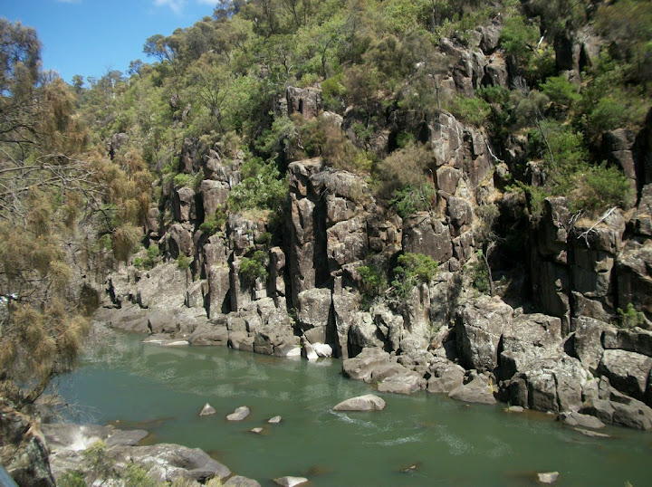
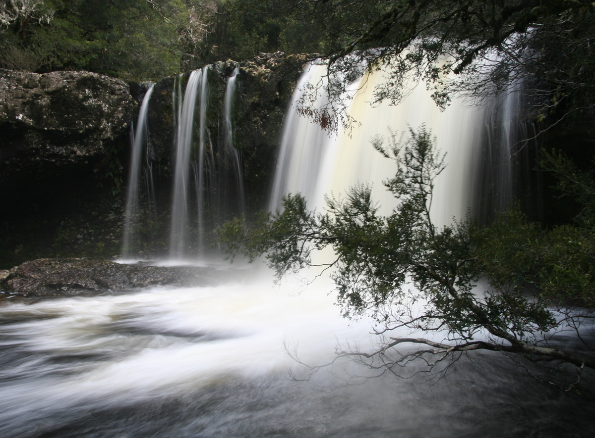
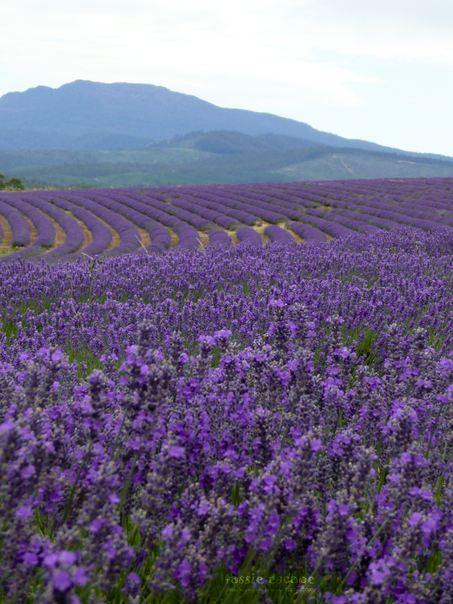
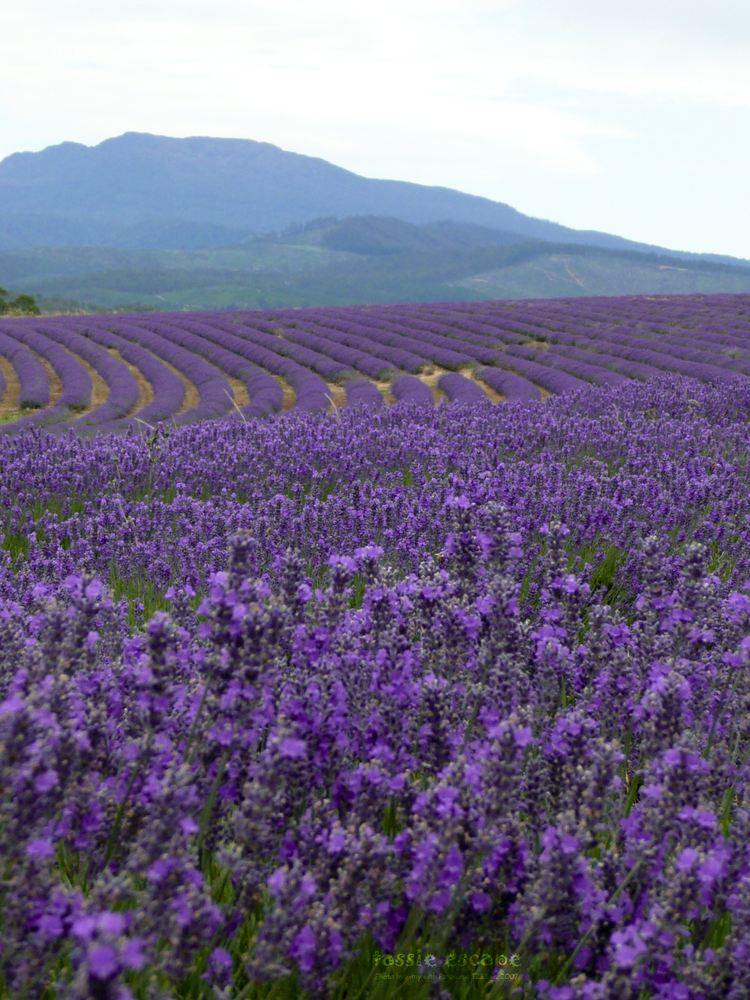

Tasmania
The Down Under's Down Under
History
The island was adjoined to the mainland of Australia until the end of the last glacial period about 10,000 years ago. Much of the island is composed of Jurassic dolerite intrusions (upwellings of magma) through other rock types, sometimes forming large columnar joints. Tasmania has the world's largest areas of dolerite, with many distinctive mountains and cliffs formed from this rock type. The central plateau and the southeast portions of the island are mostly dolerite. Mount Wellington above Hobart is a good example, showing distinct columns known as the Organ Pipes.
In the southern midlands as far south as Hobart, the dolerite is underlaid by sandstone and similar sedimentary stones. In the southwest, Precambrian quartzites were formed from very ancient sea sediments and form strikingly sharp ridges and ranges, such as Federation Peak or Frenchmans Cap. In the northeast and east, continental granites can be seen, such as at Freycinet, similar to coastal granites on mainland Australia. In the northwest and west, mineral-rich volcanic rock can be seen at Mount Read near Rosebery, or at Mount Lyell near Queenstown. Also present in the south and northwest is limestone with caves.
Notable People
- Oliver Heyward, 6th Bishop of Bendigo
- ary, Crown Princess of Denmark (née Mary Donaldson
- David Walsh—Owner and founder of MONA
- Bob Clifford, owner and founder of Incat
- Truganini, full-blooded Tasmanian Aborigine
Pictures
  
